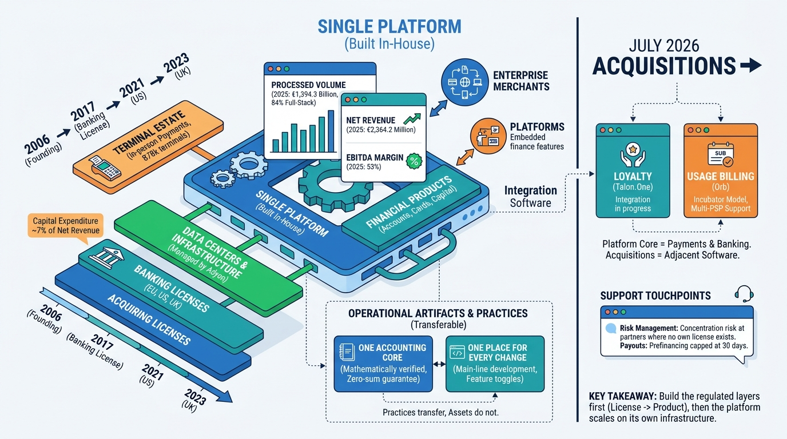

Part X — BETS: Where Stripe and Adyen Diverge
Case: Adyen, the Single Platform With a Banking Licence
AI-assisted: researched and written with Claude Code; illustrations generated with Gemini. How this works

Image generated by Google Gemini (gemini-3-pro-image-preview)